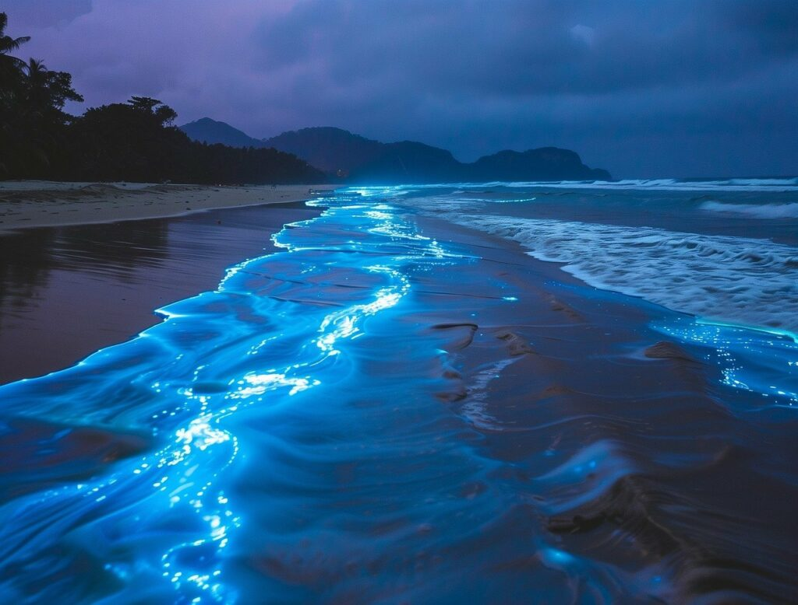

The Fascinating World of Bioluminescence
Have you ever wondered why some creatures glow in the dark? Bioluminescence is the production and emission of light by living organisms. This natural phenomenon is found in various species, including fireflies, certain fungi, and many marine animals like jellyfish and deep-sea fish.
The light is produced through a chemical reaction that occurs in specialized cells or organelles. In the ocean, bioluminescence is used for camouflage, attracting mates, luring prey, or deterring predators. On land, fireflies use their glow to communicate and find partners during warm summer nights.
Scientists are studying bioluminescent organisms to develop new technologies, such as medical imaging tools and sustainable lighting. The next time you see a glowing creature, remember you’re witnessing one of nature’s most magical displays!
article written by NiHar Christison with the assistance of GPT 4.1